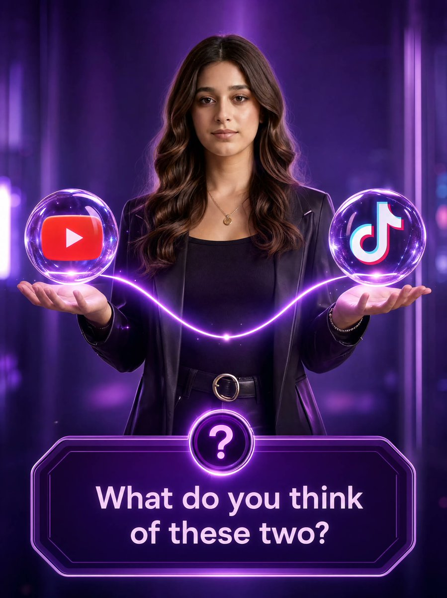

📎 来源： @MahnoorAi12 原帖
PROMPT
Prompt
> Use the uploaded image as the primary face reference and preserve the exact facial identity with maximum accuracy. Maintain the same face shape, eyes, eyebrows, nose, lips, skin tone, smile, eyeglasses, hairstyle, loose hair strands, and overall facial proportions. Face consistency and identity lock are the highest priority.
A young woman is centered in the frame, wearing a modern stylish outfit (trendy casual fashion, elegant contemporary look, different from the reference shirt). She stands against a luxurious neon-purple studio background with soft glow and depth.
Above her open palms float two premium transparent crystal-glass spheres. The left sphere contains the YouTube logo, and the right sphere contains the TikTok logo. Both spheres are connected by a glowing neon-purple light tube creating a futuristic social media comparison concept.
The woman looks directly at the camera with a confident and friendly expression. High-end advertising poster design, ultra-realistic photography, cinematic lighting, premium 3D glass effects, sharp focus, realistic reflections, vibrant purple color grading, luxury digital marketing theme, professional commercial artwork, 4K, highly detailed, photorealistic, exact same face as uploaded reference image.
At the bottom, a sleek modern purple panel with a glowing question mark icon and the text:
"What do you think of these two?"
Face identity locked, facial features unchanged, maximum resemblance to uploaded reference.
Negative Prompt:
> Different face, different person, altered facial structure, age change, hairstyle change, different glasses, facial distortion, asymmetrical face, cartoon, anime, illustration, blurry face, low quality, extra fingers, duplicate objects, watermark, text errors, identity loss, overprocessed skin, unrealistic proportions.

1. Open Gemini / Grok / GPT Image 2.0
2. Upload your photo
3. Copy the prompt
4. Generate the image
5. Prompt ⤵️
📎 出典： @MahnoorAi12 原文
（日本語講準備中）